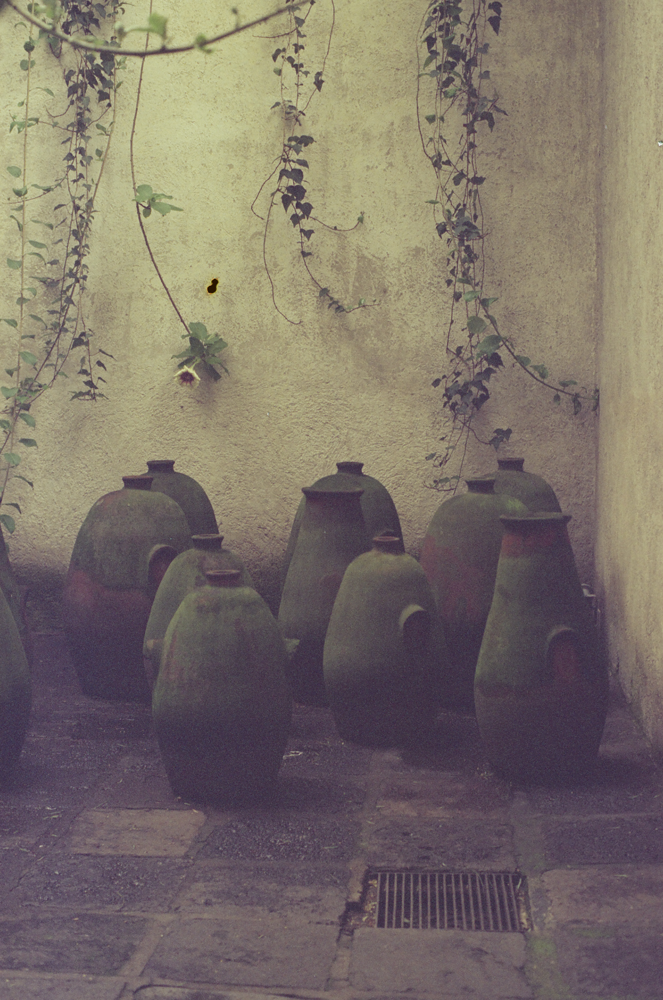
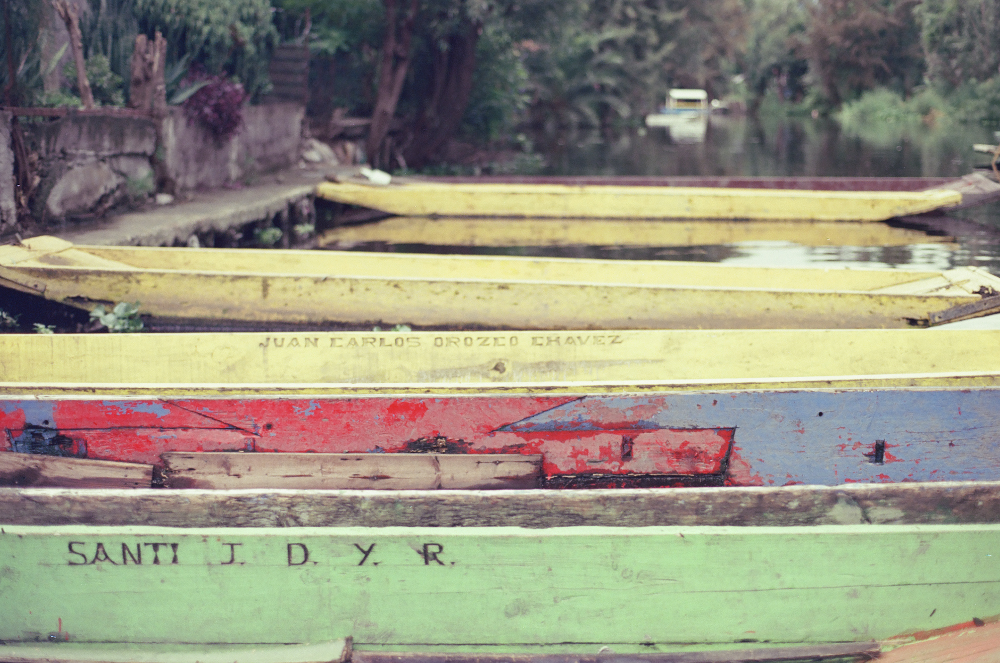
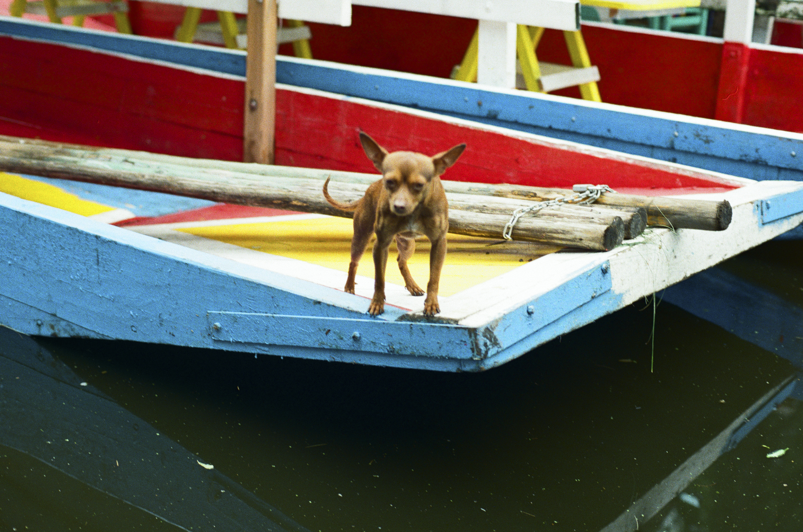

Gia y Pablo en el baño de la Casa Luis Barragán, 2025Expired Fujifilm Eterna en Olympus OM1.

Casa Luis Barragán, junio 2025Expired Fujifilm Eterna en Olympus OM1.

Xochimilco, junio 2025Expired Fujifilm Eterna en Olympus OM1.

Perrito Chihuahua en Xochimilco, junio 2025Flic Film's Street Savvy en Olympus OM1.Gia en Xochimilco, junio 2025Flic Film's Street Savvy en Olympus OM1.Garza blanca (Ardea alba) en Xochimilco, junio 2025.Flic Film's Street Savvy en Olympus OM1.Perro de agua (Nycticorax nycticorax) en Xochimilco, junio 2025.Kodak Tri-X en Olympus OM1.Teotihuacán, junio 2025.Kodak Tri-X en Olympus OM1.Pirámide de la Luna en Teotihuacán, junio 2025.Kodak Tri-X en Olympus OM1.Giana en Café Avellaneda, junio 2025.Kodak Tri-X en Olympus OM1.Un muchacho con sombrero me pidió una foto en la carretera Picacho-Ajusco, mayo 2025.Expired Kodak Vision 3 en Olympus OM1.El quiote de un maguey en la Facultad de Ciencias, mayo 2025.Expired Kodak Vision 3 en Olympus OM1.Facultad de Ciencias UNAM, mayo 2025.Expired Kodak Vision 3 en Olympus OM1.Emiliano en la terraza del Instituto de Matemáticas, mayo 2025.Expired Kodak Vision 3 en Olympus OM1.Alberca de Ciudad Universitaria, mayo 2025.Expired Kodak Vision 3 en Olympus OM1.Biblioteca Central de Ciudad Universitaria, mayo 2025.Expired Kodak Vision 3 en Olympus OM1.Biblioteca Central de Ciudad Universitaria, mayo 2025.Expired Kodak Vision 3 en Olympus OM1.Gia echando gas en Tucson, abril 2025.Expired Kodak UltraMax 400 en Olympus Accura.